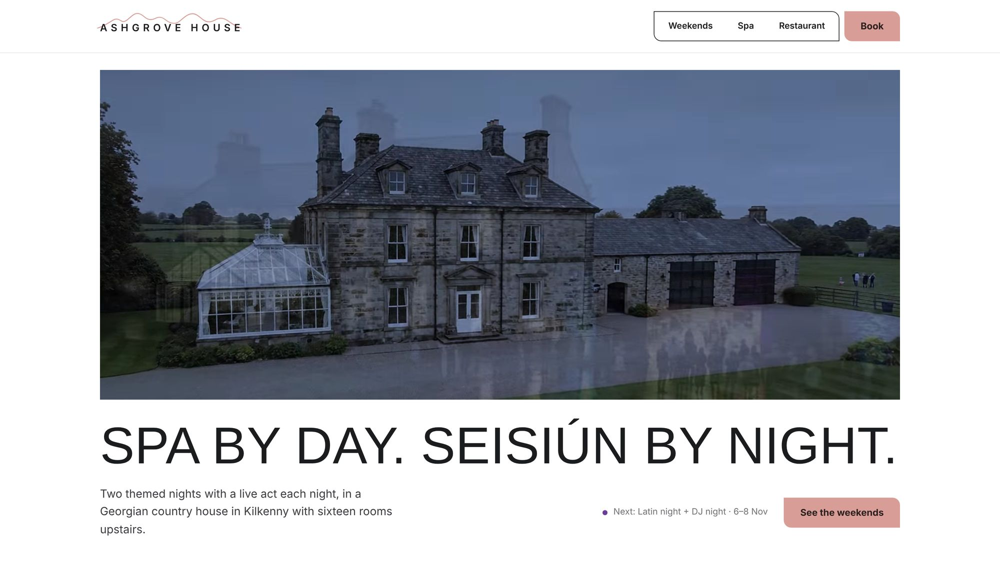

LearResidence
A developer selling one estate of three house types, presented as architecture rather than listings.
- Sector
- Design-build developer, Kildare
- Role
- Design and build
- Built with
- Figma, Astro, TypeScript
Three homes
The developer designs and builds with one hand, so I showed the three house types as drawings first and photographs second: the drawing is the promise, the photograph is proof it was kept.
Buyers of a new estate worry that the finished house won’t match the brochure. I made every house fade from its photograph into the drawing it was built from, so they see that what was designed is exactly what was built.
Someone buying a home that isn’t built yet needs to understand the space, not just admire it. I set photograph, drawing and cutaway side by side as they read, so the layout makes sense before the show home visit.
The place and the firm
Commuters don’t buy kilometres, they buy minutes. Instead of the usual list of distances, I drew rings of travel time around the estate, five minutes to Kildare Village and thirty to Dublin by train, so a buyer sees at once how their week would work from here.
Buyers fear the gaps between architect, builder and seller. I gave each step of the firm’s process a small drawing of its own, to show that one hand from first sketch to keys means fewer surprises.
Type and colour
On the phone


Every screen on this page is a recording of the live site.
Visit the live site